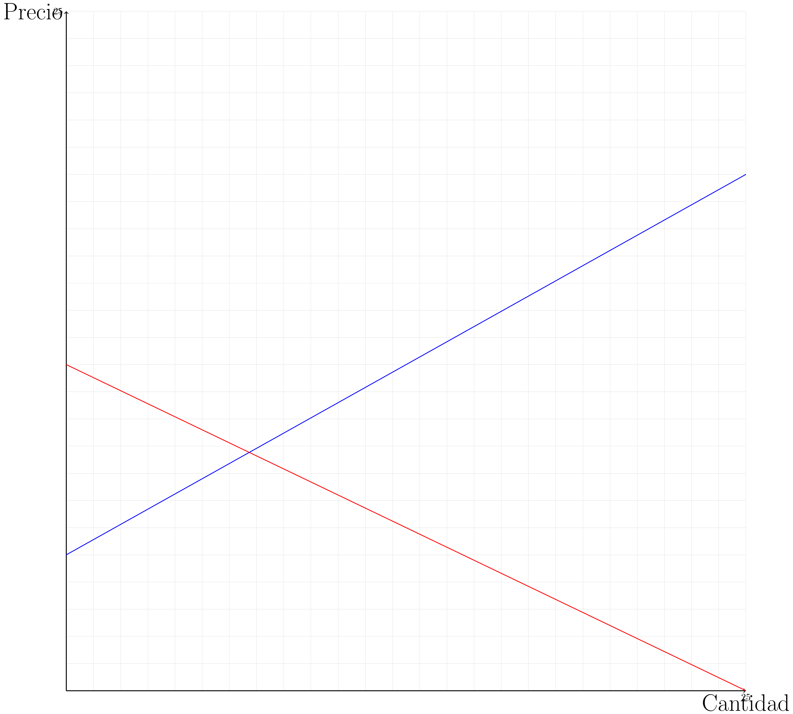

2 Funcionamiento de los mercados.
2.1 Costos de producción:
\[ \pi = IT-CT \Leftrightarrow \pi = IT-CT(H_1,H_2,L,K) \]
Donde “\(\pi\)” es el beneficio, “\(IT\)” el ingreso, y “\(CT\)” es el gasto. Y donde “\(H_1\)” es materia prima, estos son los materiales que se extraen directamente de la naturaleza, como la madera. “\(H_2\)” es insumos, a diferencia de la materia prima son elementos ya procesados, como el cartón. “\(L\)” es mano de obra, es el gasto que se hace por tener empleados, por ejemplo, el sueldo. y “\(K\)” gastos generales, son los gastos que se hacen constantemente, como el arriendo de un lugar.
Ejercicio resuelto:
Se tiene una ferretería que tiene de gastos $100 en materia prima, $150 en insumos, $50 en mano de obra y tiene de ingresos y beneficios $850 y $350 respectivamente ¿Cuánto son sus gastos generales?
Respuesta:
Se tiene una ferretería que tiene de gastos $100 en materia prima, $150 en insumos, $50 en mano de obra y tiene de ingresos y beneficios $850 y $350 respectivamente ¿Cuánto son sus gastos generales?
Respuesta:
Reemplazamos en \(\pi = IT-CT(H_1,H_2,L,K)\). \[ 350 = 850-(100+150+50+K) \]
\[ 350 = 850-300-K \]
\[ 350 = 550-K \]
\[ K = 200 \]
2.2 Oferta:
La oferta, en breves palabras, es el mínimo valor al cual se está dispuesto a vender determinada cantidad. Donde \(Q\) es la cantidad que se va a producir, \(a\) es una contante y \(b>0\) es la pendiente si asumimos una forma funcional lineal para la relación. Así la función determina el valor del bien que se produce es:
\[ P(Q)=a+bQ \]
Para entender bien mostraremos un gráfico, donde (utilizando punto para los decimales) \(a=0.5\), \(b=0.5\):
| Precio (\(P\)) | Cantidad (\(Q\)) |
| 1 | 1 |
| 1.5 | 2 |
| 2 | 3 |
| 2.5 | 4 |
| 3 | 5 |
| 3.5 | 6 |
| 4 | 7 |
| 4.5 | 8 |
| 5 | 9 |
2.3 Demanda:
Mientras que la oferta se enfoca en el productor la demanda ve el comportamiento de los consumidores. La cantidad demandada es cuanto está dispuesto a comprar el consumidor para un determinado precio. La ley de demanda dice que a mayor precio habrá una menor cantidad demandada. Dicha relación, asumiendo una forma lineal se puede re-escribir como:
\[ P(Q)=a-bQ \] Para los valores \(a=21\), \(b=0.8\), que podría ser el mismo caso anterior, el gráfico sería así:
| Precio ($P$) | Cantidad ($Q$) |
| 20.2 | 1 |
| 19.4 | 2 |
| 18.6 | 3 |
| 17.8 | 4 |
| 17 | 5 |
| 16.2 | 6 |
| 15.4 | 7 |
| 14.6 | 8 |
| 13.8 | 9 |
Como se puede ver, mientras más cantidad hay, menos demanda hay. Por lo que el precio demandado baja.
2.4 Equilibrio de mercado:
Cuando el valor de la demanda y de la oferta son iguales, significa que hay equilibrio de mercado. Esto se puede ver en la intersección de ambas curvas en un gráfico.
Si decimos que los dos gráficos anteriores son del mismo bien entonces el gráfico del equilibrio de mercado sería:

El punto de intersección es cuando el precio es de $11 y hay 12,5 unidades de producción. Este es el punto de equilibrio de mercado, si el mercado está sobre ese punto es que hay un exceso de oferta, y su está más bajo, es que hay escasez.
2.5 Cambios de curvas:
Podemos analizar que sucediera si hay un cambio en la curva de oferta y demanda, los cambios se relacionan de la siguiente forma:
| Sin cambio en la oferta | Un incremento de la oferta | Un decremento de la oferta | |
| Sin cambio en la oferta | P igual Q igual |
P disminuye Q aumenta |
P aumenta Q disminuye |
| Un incremento de la oferta | P aumenta Q aumenta |
P ambiguo Q aumenta |
P aumenta Q ambiguo |
| Un decremento de la oferta | P disminuye Q disminuye |
P disminuye Q ambiguo |
P ambiguo Q disminuye |
Por lo general, lo que hace que las curvas cambien de posición son eventos bruscos, por ejemplo, en el mercado de las lecherías, si se contamina con un antibiótico la central de “colun” la curva de oferta aumentaría, ya que, es menos lo que se podría ofrecer.
Puede ocurrir que cambien las posiciones de ambas curvas simultáneamente.
Ahora veremos cómo afecta esto en el punto de equilibrio:
Tomaremos como situación antes del cambio el siguiente gráfico.
Los siguientes gráficos representan el cambio:
Curva de oferta se desplaza hacia la izquierda:

Curva de demanda e desplaza hacia la derecha:

Curva de oferta e desplaza hacia la derecha:

Curva de demanda e desplaza hacia la izquierda:

2.6 Elasticidad:
La elasticidad de la oferta y la demanda se calcula con esta fórmula: \[ \in =\left|\frac{\triangle\%Q}{\triangle\%P} \right| \] Donde \(\in\) es la elasticidad, \(\triangle\%\) el cambio porcentual, Q es la demanda y P el precio.
\[ f(x)= \left\{ \begin{array}{lcc} \text{Inelástica} & \text{si} & \in < 1 \\ \\ \text{Absolutamente inelástica} & \text{si} & \in = 0 \\ \\ \text{Elasticidad unitaria} & \text{si} & \in = 1 \\ \\ \text{Elástica} & \text{si} & \in > 1 \end{array} \right. \]
Ejercicio resuelto:
Tenemos las siguientes expresiones \(P_1(Q)\) y \(P_2(Q)\) que son la ecuación de oferta hace un año y de ahora respectivamente y \(P_3(Q)\) y \(P_4(Q)\) que son la ecuación de demanda de hace un año y actual, calcule y clasifique su elasticidad.
\[ \begin{matrix} P_1(Q)=10+4Q & P_2(Q)=30+4Q \\ P_3(Q)=310-6Q & P_4(Q)=200-6Q \\ \end{matrix} \]
Respuesta:
Paso I: encontrar el equilibrio de mercado del antes y el ahora.
Equilibrio antiguo:
\[ 10+4Q=310-6Q \Leftrightarrow 300=10Q \Leftrightarrow Q=30 \]
\[ P_3(Q)=310-6 \cdot 30 \Leftrightarrow P_3 = P_1 = 130 \]
\[ (30,130) \]
Equilibrio actual:
\[ 30+4Q=200-6Q \Leftrightarrow 170=10Q \Leftrightarrow Q=17 \]
\[ P_2(Q)=30+4 \cdot 17 \Leftrightarrow P_2 = P_4 = 98 \]
\[ (17,98) \]
Paso II: Calcular la elasticidad y clasificarla.
\[ \in =\left|\dfrac{1-\frac{17}{30}}{1-\frac{98}{130}} \right| \]
\[ \in =\dfrac{\frac{13}{30}}{\frac{32}{130}} \]
\[ \in =\dfrac{1690}{960} \]
\[ \in =1,7604 \]
Es elástica.